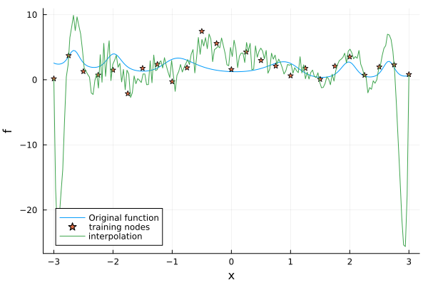
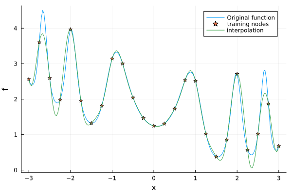

One-dimensional interpolation and differentiation
In this tutorial, we will create a simple one-dimensional interpolation, investigate how to tune the interpolation method, and show how to apply differential operators on the resulting Interpolation object.
Define problem setup and perform interpolation
We start by defining a simple one-dimensional interpolation problem. We will interpolate the oscillatory function
\[f(x) = \exp(\sin(2x^2)) + 0.1(x - \pi/2)^2\]
between $x = -3$ and $x = 3$. For simplicity, we take 25 equidistant points in the interval $[-3, 3]$ as interpolation points.
using KernelInterpolation
f(x) = exp(sin(2*x[1]^2)) + 0.1*(x[1] - pi/2)^2
x_min = -3
x_max = 3
N = 25
nodeset = NodeSet(LinRange(x_min, x_max, N))
values = f.(nodeset)25-element Vector{Float64}:
2.561118346612702
3.6010482803853834
2.592967848165464
1.9848324553623153
3.9645665583549765
1.957023058914906
1.3192182268719703
1.8124194938335236
3.143477103401214
3.003796380105595
⋮
2.5151585726832555
1.0270213304360754
0.3767404307950323
0.8574656301584783
2.7079294969190593
0.5711157612469084
1.0221715213705675
1.8731723209109972
0.676162754458826Next, we choose the kernel (radial basis function) for the interpolation. We use the Gaussian kernel with a fixed shape parameter of 0.5 and interpolate the function values.
kernel = GaussKernel{1}(shape_parameter = 0.5)
itp = interpolate(nodeset, values, kernel)Interpolation with 25 nodes, kernel GaussKernel{1}(shape_parameter = 0.5) and polynomial of order 0.Let's plot the interpolated function and the original function on a finer grid to see how well the interpolation works.
using Plots
many_nodes = NodeSet(LinRange(x_min, x_max, 200))
plot(many_nodes, f, label = "Original function")
plot!(many_nodes, itp)
Uhh, that doesn't look too good. What happened?
Finding a well-suited interpolation method
We used the GaussKernel with a rather small shape parameter of 0.5, which leads to an ill-conditioned linear system of equations. We can inspect the condition number of the interpolation matrix to confirm this.
using LinearAlgebra
A = system_matrix(itp)
cond(A)6.239147369601393e17Here, we used the system_matrix function to obtain the interpolation matrix A and calculated the condition number of the matrix. For this specific example the system matrix simply is the kernel_matrix, but for more sophisticated interpolations the system matrix contains additional parts like the polynomial augmentation. The condition number is a measure of how well-conditioned the matrix is. A large condition number indicates that the matrix is ill-conditioned, which usually leads to high numerical errors. To avoid this, we have different options. We can either increase the shape parameter of the kernel or we can use a different kernel. The GaussKernel is known to be rather ill-conditioned and other kernels like the WendlandKernel usually lead to better condition numbers. Here, we choose to increase the shape parameter of the Gaussian kernel to 1.8, which makes the interpolation more localized. Note, however, that you might need to choose another kernel if you increase the number of interpolation points.
kernel = GaussKernel{1}(shape_parameter = 1.8)
itp = interpolate(nodeset, values, kernel)
plot(many_nodes, f, label = "Original function")
plot!(many_nodes, itp)
We can see a much better agreement between the original function and the interpolated function. We still observe some undershoots, but this is expected due to the oscillatory nature of the function and the limited number of interpolation points. Let's confirm that increasing the shape parameter improved the condition number of the interpolation matrix.
A = system_matrix(itp)
cond(A)57037.29656737549Indeed, the condition number is much smaller than before!
Applying differential operators
Sometimes, we are not only interested in interpolating a function, but also in computing its derivatives. Remember that in the simplest case, where no polynomial augmentation is used, the interpolation itp represents a linear combination
\[s(x) = \sum_{j = 1}^N c_j\phi(\|x - x_j\|_2)\]
with $\phi$ given by the radial basis function, in this case the Gaussian. Because we know $\phi$ and its derivatives, we can compute the derivatives of $s$ by differentiating the kernel function. For a general dimension $d$, the partial derivative in the $i$-th direction, $i\in\{1,\ldots,d\}$, of the interpolation is then given by
\[\frac{\partial s}{\partial x_i}(x) = \sum_{j = 1}^N c_j\frac{\partial \phi}{\partial x_i}(\|x - x_j\|_2).\]
Although the derivatives of the kernel functions could be computed analytically, KernelInterpolation.jl uses automatic differentiation (AD) by using ForwardDiff.jl. This allows for flexibility, simplicity, and easier extension, but it might be slower than computing the derivatives analytically.
KernelInterpolation.jl already provides some common differential operators. For example, we can compute the first derivative of the interpolation itp at a specific point x by using the PartialDerivative operator.
d1 = PartialDerivative(1)
x = 0.0
itp_dx = d1(itp, x)-0.3128030378004036Let's plot the first derivative of the interpolated function and compare it to the analytical first derivative.
itp_dx_many_nodes = d1.(Ref(itp), many_nodes)
f_dx(x) = 4*exp(sin(2*x[1]^2))*x[1]*cos(2*x[1]^2) + 0.2*x[1] - pi/10
plot(many_nodes, f_dx, label = "Derivative of original function")
plot!(many_nodes, itp_dx_many_nodes, label = "Derivative of interpolated function")